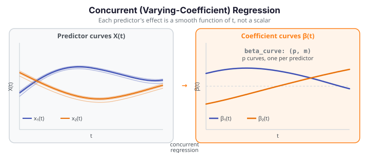

Concurrent (Varying-Coefficient) Regression¶
Concurrent regression — also called the varying-coefficient model — extends functional regression by letting each predictor's effect vary smoothly over the domain. Where ordinary linear regression assigns a single scalar coefficient to each predictor, concurrent regression assigns an entire coefficient function \(\beta_k(t)\). At each point \(t\) the model behaves like a local ordinary regression, but the coefficients change fluidly as \(t\) progresses.
fdars.regression.concurrent_regression estimates one smooth coefficient curve per predictor using local kernel regression: the bandwidth controls how quickly the coefficients are allowed to change, and the kernel controls the weighting of neighboring time points.

Theory¶
Given \(p\) functional predictors \(X^{(1)}(t), \dots, X^{(p)}(t)\) and a functional response \(Y(t)\), all observed at the same \(m\) grid points for \(n\) subjects, the model is
where \(\beta_0(t)\) is a time-varying intercept, \(\beta_1(t), \dots, \beta_p(t)\) are time-varying coefficient functions, and \(\varepsilon_i(t)\) is a zero-mean error process. At each grid point \(t_j\) the function solves a weighted least-squares system with kernel weights centred at \(t_j\):
where \(h\) is the bandwidth and \(K\) is the chosen kernel ("gaussian", "epanechnikov", or "tricube"). The resulting \(\hat\beta(t)\) is a smooth estimate of how the coefficient evolves over the domain.
Parameters
| Parameter | Type | Default | Description |
|---|---|---|---|
predictors |
list[ndarray (n, m)] |
— | List of \(p\) predictor matrices; each row is one subject's curve |
response |
ndarray (n, m) |
— | Functional response matrix |
argvals |
ndarray (m,) or None |
None |
Evaluation grid; None → uniform grid on \([0, 1]\) |
bandwidth |
float |
0.2 |
Kernel bandwidth; must be positive |
kernel |
str |
"gaussian" |
Kernel: "gaussian", "epanechnikov", or "tricube" |
Returns a dict:
| Key | Shape | Description |
|---|---|---|
"beta_curve" |
(p, m) |
Time-varying coefficient curves — one row per predictor |
"intercept" |
(m,) |
Time-varying intercept function \(\hat\beta_0(t)\) |
"fitted" |
(n, m) |
Fitted response curves \(\hat Y_i(t)\) |
"residuals" |
(n, m) |
Residual curves \(Y_i(t) - \hat Y_i(t)\) |
"argvals" |
(m,) |
Evaluation grid used (echoed back) |
beta_curve shape: (p, m) — predictors × grid
res["beta_curve"] has shape (p, m), where p = len(predictors) and m is the number of grid points. This is not (n, m) — confusing the two is the most common transposition error when working with this function. Row k of beta_curve is the coefficient curve for the k-th predictor, evaluated at every grid point.
import numpy as np
from docs_fig import fig, render, fast
import fdars.regression as reg
rng = np.random.default_rng(0)
n, m = 20, 50
t = np.linspace(0, 1, m)
# Two synthetic predictor curves + a response
x1 = np.array([np.sin(2 * np.pi * t) + rng.normal(0, 0.1, m) for _ in range(n)])
x2 = np.array([np.cos(2 * np.pi * t) + rng.normal(0, 0.1, m) for _ in range(n)])
y = x1 * np.sin(2 * np.pi * t) + x2 * 0.5 + rng.normal(0, 0.05, (n, m))
res = reg.concurrent_regression([x1, x2], y, t)
beta = np.asarray(res["beta_curve"]) # shape (2, m) — p=2 predictors
f, ax = fig(figsize=(8.0, 3.8))
ax.plot(t, beta[0], color="#3f51b5", lw=2.2, label="β₁(t) — sin predictor")
ax.plot(t, beta[1], color="#e8710a", lw=2.2, label="β₂(t) — cos predictor")
ax.set(title="Concurrent regression — estimated coefficient curves",
xlabel="t", ylabel="β(t)")
ax.legend(fontsize=9)
print(render(f))
print(f"beta_curve shape: {beta.shape} (p=2 predictors × m={m} grid points)")
print("FDARS_FENCE_OK")
Caveats and interpretation¶
Bandwidth selection¶
The bandwidth h is the most consequential tuning choice. There is no built-in cross-validation in concurrent_regression — the user supplies the bandwidth directly.
Bandwidth trades bias for variance
- Small bandwidth (e.g.
bandwidth=0.05): the kernel weights few neighbours at each \(t\), so the estimated \(\hat\beta(t)\) tracks local fluctuations closely — resulting in wiggly, high-variance coefficient curves. On small samples this produces noisy estimates that are hard to interpret. - Large bandwidth (e.g.
bandwidth=0.5): the kernel pools many neighbours, smoothing over local structure — resulting in over-smoothed, biased estimates that miss true variation in \(\beta(t)\). - Practical starting point: try
bandwidth=0.2(the default) on a normalised argvals grid and inspect the shape ofres["beta_curve"]. If the curves look spiky, widen; if they look flat when you expect variation, narrow. - Manual CV: to select bandwidth systematically, evaluate held-out prediction error (
functional_mse) over a grid of candidate bandwidths.fdarsdoes not providefregre_np_cvfor the concurrent model, so this must be coded manually.
Kernel choice¶
The three kernels differ in their support and decay:
| Kernel | Support | Decay | When to prefer |
|---|---|---|---|
"gaussian" (default) |
infinite (global) | exponential | Smooth data; all observations contribute with decaying weight |
"epanechnikov" |
compact \([\!-1, 1\!]\) | quadratic | Faster computation; observations beyond bandwidth contribute nothing |
"tricube" |
compact \([\!-1, 1\!]\) | cubic | Similar to Epanechnikov; slightly smoother drop-off |
For most functional datasets with smooth \(\beta(t)\), the choice of kernel has less impact than the choice of bandwidth. Start with "gaussian".
Model scope: local-at-each-t, not global¶
Concurrent regression is a varying-coefficient (local) model — it does not fit a single global relationship between predictor and response. At each grid point \(t_j\) it runs an independent weighted regression using only the kernel-weighted neighbourhood of \(t_j\). This means:
- The model can capture coefficient functions that reverse sign or change shape over the domain.
- It cannot borrow information across widely separated regions of \(t\) (unlike a basis-regression approach).
- Residuals \(\varepsilon_i(t)\) are not assumed uncorrelated across \(t\) — the model makes no statement about temporal dependence of errors.
References¶
- Hastie, T., and Tibshirani, R. (1993). "Varying-coefficient models." Journal of the Royal Statistical Society, Series B, 55(4), 757–796. — foundational paper on the varying-coefficient model.
- Fan, J., and Zhang, W. (1999). "Statistical estimation in varying coefficient models." Annals of Statistics, 27(5), 1491–1518. — local polynomial estimation of time-varying coefficients.
- Ramsay, J. O., and Silverman, B. W. (2005). Functional Data Analysis, 2nd ed. Springer. — Chapter 14: concurrent regression and the functional linear model.